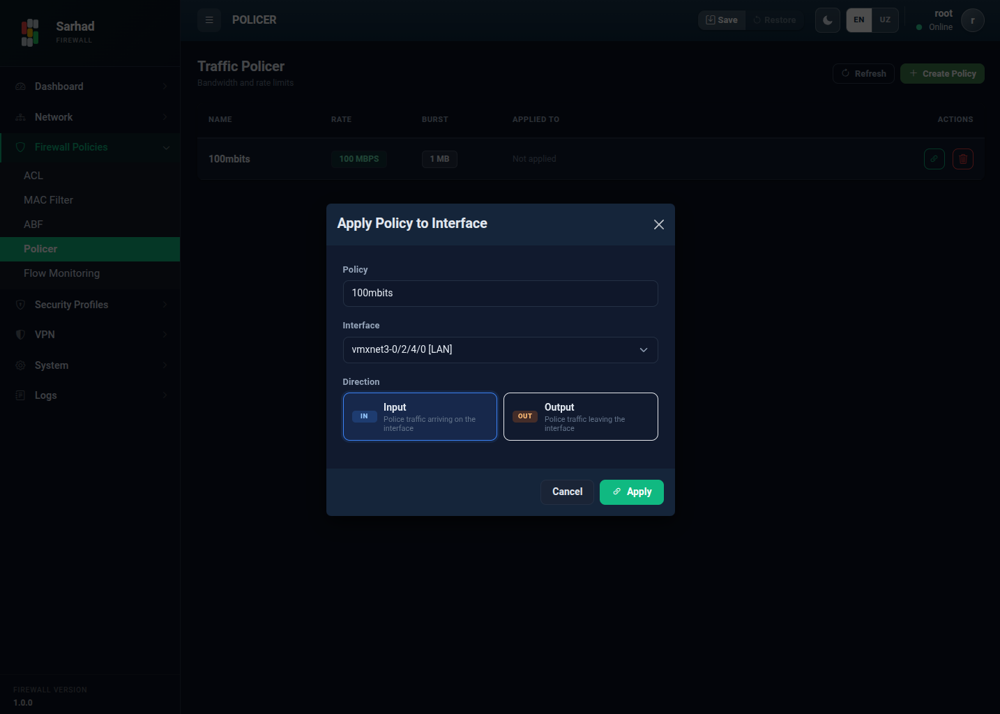

4. Trafik tezligini cheklash (Traffic Policing / QoS)
Trafik tezligini cheklash (Traffic Policing) tarmoq trafigining tezligini
(bandwidth) cheklash imkonini beradi. Bu orqali ayrim interfeyslar yoki
foydalanuvchilarning tarmoq resurslarini haddan tashqari band qilib qo’yishining
oldi olinadi. Ushbu bo’limga o’tish uchun chap menyudan Firewall → Policer
bo’limini tanlang (/policer).

4.1. Qanday ishlaydi
Cheklov “token bucket” (token chelaki) algoritmiga asoslanadi: agar trafik belgilangan tezlikdan oshib ketsa, ortiqcha paketlar tashlab yuboriladi. Bu interfeysga kiruvchi yoki chiquvchi trafikning maksimal tezligini nazorat qilish imkonini beradi.
4.2. QoS siyosati yaratish
Create Policy tugmasini bosing.
Quyidagi parametrlarni kiriting:
Policy Name — siyosatning tushunarli nomi (masalan,
100Mbps-limit).Committed Rate (CIR) — kafolatlangan o’rtacha tezlik. Qiymatni kiritib, birligini (Kbps, Mbps yoki Gbps) tanlang.
Committed Burst (CB) — bir vaqtning o’zida ruxsat etilgan maksimal burst (qisqa muddatli ortiqcha) hajmi.
Create tugmasini bosing.

Yaratilgan siyosatlar jadvalda nomi, Rate (CIR), Burst (CB) va qo’llanilgan interfeyslari bilan ko’rsatiladi.
4.3. Siyosatni interfeysga qo’llash
Siyosat yaratilgandan so’ng uni interfeysga qo’llash kerak. Buning uchun ro’yxatdagi siyosat qatorini ikki marta bosing (double-click) — qo’llash oynasi ochiladi:
Policy — qo’llaniladigan siyosat.
Interface — siyosat qaysi interfeysga qo’llanishi.
Direction — yo’nalish:
Input — interfeysga kiruvchi trafikni cheklaydi.
Output — interfeysdan chiquvchi trafikni cheklaydi.
{kind=link}

4.3.1. Misol: Mehmon tarmog’ini cheklash
Mehmon foydalanuvchilari tarmog’i internetning butun kanalini band qilib
qo’ymasligi uchun unga 100 Mbps cheklov qo’yish mumkin. Buning uchun
CIR = 100 Mbps bo’lgan siyosat yarating va uni mehmon interfeysiga
Output yo’nalishida qo’llang.
Note
Bu mexanizm trafikni cheklaydi (policing), lekin uni navbatga qo’yib kechiktirmaydi (shaping emas). Chegaradan oshgan paketlar darhol tashlab yuboriladi.